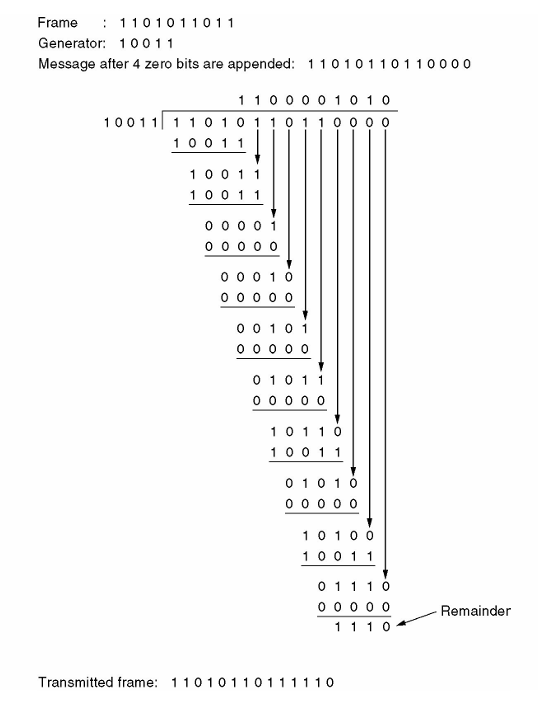

数据链路层¶
约 3520 个字 10 行代码 1 张图片 预计阅读时间 12 分钟
物理层把比特送到链路另一端，数据链路层进一步把这些比特组织成帧（ frame ），向网络层提供相邻节点之间的数据传送服务。我们需要解决三个基本问题：怎样识别一帧、怎样处理差错、怎样协调收发速度。多个节点共享同一信道时，还需要由 MAC 子层 协调介质访问。
数据链路层的服务¶
链路是相邻节点之间的一段物理通路；在链路上加上实现通信协议的软硬件，就形成了数据链路。主机跨网络通信时，沿途的每一段数据链路分别传送自己的帧。
不同链路可以采用不同的帧格式。路由器收到帧后取出网络层分组，再把它封装到下一段链路的帧中。
| 服务 | 怎样传送 | 适用场景 |
|---|---|---|
| 无确认无连接服务 | 不预先建立连接，接收方不逐帧确认 | 误码率较低的链路，例如以太网 |
| 有确认无连接服务 | 不预先建立连接，对需要可靠交付的帧进行确认与重传 | 无线链路，例如 802.11 的单播数据传输 |
| 有确认面向连接服务 | 先建立连接，再通过编号、确认等机制按序传送，最后释放连接 | 需要在链路层维护可靠连接的场景 |
链路管理负责连接的建立、维持和释放；流量控制限制发送方的发送速度，使接收方来得及处理；差错控制处理比特出错、帧丢失和重复等问题。具体采用哪些功能，由链路协议决定。
成帧与透明传输¶
发送方为网络层交下来的数据添加控制信息，构成帧；接收方则从连续的比特流中找出帧的边界。
透明传输要求数据中可以出现任意比特组合。即使数据恰好与帧定界符相同，也应当作为普通数据交付给上层。
字节计数法¶
在帧首部设置长度字段，接收方按长度确定帧的结束位置。若计数字段本身也计入帧长，那么发送 A B C D 四个字符、计数字段占 1 B 时，计数值应为 5。
这种方法的主要问题是：长度字段出错会使接收方找错帧边界，连带影响后续帧的同步。实际协议可以把长度与定界标志、校验结合使用。
字节填充法¶
用特殊字节 FLAG 标记帧边界，用 ESC 表示转义。发送方遇到数据中的 FLAG 或 ESC，就在它前面插入一个 ESC；接收方遇到 ESC 后，把紧随的字节作为普通数据恢复。
帧首、帧尾的 FLAG 是定界符，中间经转义的 FLAG 是数据。
零比特填充法¶
用 01111110 作为帧的起止标志。在两个标志之间，发送方每遇到 5 个连续的 1，就插入一个 0 ；接收方识别出帧边界后，删除每 5 个连续的 1 后面的填充 0。
例如，数据 01111110 填充后变成 011111010。定界标志本身不参与填充，所以接收方仍然能找到帧的边界。
物理层编码违例法¶
利用物理层编码中不用于表示普通数据的信号组合来定界。例如，曼彻斯特编码的每位中间都有跳变，可以借助不符合正常数据编码规则的组合表示控制信息。这种方法需要底层编码保留可用的冗余状态。
差错检测与纠正¶
传输中可能出现孤立的比特错误，也可能连续一段受到干扰而形成突发差错。两种基本处理思路是：
- 检错后重传：增加校验信息，检测出错后丢弃，由可靠传输协议安排重传。
- 前向纠错（ FEC ）：增加足够的冗余，使接收方能直接恢复一定范围内的错误。
链路误码率低且反馈方便时，检错加重传通常更经济；重传代价高、时延要求严格时，纠错编码更有价值。
海明距离与码距¶
两个等长码字的海明距离（ Hamming distance ），是对应位置上不同的比特数，也就是两码字异或后 1 的个数。一个编码集的最小码距 \(d_{\min}\)，取所有不同合法码字之间距离的最小值。
检错要求错误发生后不会变成另一个合法码字；纠错还要求接收结果能够唯一地归到原码字。码距为 3 的编码可用于检测双比特错误，或纠正单比特错误。若要纠正单错并识别双错，需要最小码距至少为 4。
奇偶校验与校验和¶
奇偶校验增加 1 位，使整个码字中 1 的总数保持为奇数或偶数。它能检测所有奇数位翻转，偶数位翻转会保持原有奇偶性。
因特网校验和把数据按 16 bit 分组，用反码加法求和：最高位产生的进位回卷加到最低位，最后对结果取反。计算时若数据长度为奇数字节，末尾补零参与运算。接收方把收到的校验和一起相加，正常结果为全 1。
循环冗余校验¶
CRC （ Cyclic Redundancy Check ）把比特串视为系数为 0 或 1 的多项式。例如 1101 表示 \(x^3+x^2+1\)。运算在模 2 下进行，加法和减法都用异或，不进位、不借位。
设数据多项式为 \(M(x)\)，生成多项式为 \(G(x)\)，其最高次数为 \(r\)，对应的比特串长 \(r+1\)。
- 在数据后补 \(r\) 个 0 ，得到 \(x^rM(x)\)。
- 用 \(G(x)\) 做模 2 除法，得到余数 \(R(x)\)。
- 把余数补足为 \(r\) 位，替换末尾的 \(r\) 个 0 ，作为帧检验序列（ FCS ）发送。
- 接收方用相同的 \(G(x)\) 除收到的整个码字，余数非零时丢弃。
若差错多项式 \(E(x)\) 恰好能被 \(G(x)\) 整除，就会漏检。选择生成多项式时，正是要让常见差错尽可能破坏整除关系。
CRC 计算
数据为 101001，生成多项式为 1101，所以 \(r=3\)。用 1101 除 101001000，余数为 001，最终发送 101001001。

海明码¶
设信息位为 \(m\) 位、校验位为 \(r\) 位。要区分“无错”和每一种单比特出错位置，需要：
构造时，把校验位放在位号 \(1,2,4,8,\ldots\)，其余位置放信息位。每个位置由其二进制位号中为 1 的那些校验位共同检查。例如，\(11=8+2+1\)，所以第 11 位参加第 1、2、8 组校验。
接收方重新计算各组奇偶性，把出错校验组对应的位号相加，得到校正子（ syndrome ）。在至多一位出错的条件下，非零校正子指出应翻转的位置。
从校正子恢复数据
从左向右编号，收到 1110 0100 1111，采用偶校验且至多一位出错。第 1、4、8 组通过，第 2 组未通过，因此翻转第 2 位，恢复码字 1010 0100 1111。
再去掉第 1、2、4、8 位，得到原始数据 1010 1111，即 0xAF。先确认编号方向，再分组校验。
其他纠错编码¶
- 卷积码：输出既取决于当前输入，也取决于之前的输入，编码器具有记忆。
- Reed–Solomon 码：以多比特符号为单位，适合处理突发差错。一个码块含 \(N\) 个符号，其中 \(K\) 个为信息符号时，可纠正至多 \(\lfloor(N-K)/2\rfloor\) 个未知位置的符号错误，或恢复至多 \(N-K\) 个已知位置的擦除。
- LDPC 码：使用稀疏校验矩阵，通过迭代译码逼近合法码字，适合较长码块。
从停等到滑动窗口¶
停等协议怎样保证可靠传输¶
若信道完全无错、接收方始终准备就绪，发送方可以连续发送。接收方处理速度有限时，就需要停止—等待（ stop-and-wait ）：发送一帧，收到许可后再发下一帧。
在有差错的信道上，还要增加确认、超时计时器和序号，形成停等 ARQ。
| 情况 | 发送方与接收方的动作 |
|---|---|
| 数据帧正确到达 | 接收方交付数据并确认；发送方收到确认后发下一帧 |
| 数据帧丢失或校验失败 | 接收方未接收有效数据；发送方超时后重传 |
| ACK 丢失 | 发送方超时重传；接收方识别出重复帧，不重复交付，但再次确认 |
停等协议只需交替使用 0、1 两个序号。发送方在收到确认前保留原帧副本，接收方记住当前期望的序号。
捎带确认¶
双方都有数据要发时，可以把确认号放入反向数据帧中，这叫捎带确认（ piggybacking ）。它减少了单独 ACK 的开销；等待反向数据的时间需要受限，若迟迟没有数据，就应单独发送确认。
做题时先看 ACK 的定义：ACK \(n\) 可以表示“已经收到 \(n\)”，也可以表示“下一帧期望 \(n\)”。后一种含义下，被累计确认的是 \(n\) 之前的帧。TCP 的确认号采用“下一个期望字节”的含义。
发送窗口与接收窗口¶
发送窗口规定允许发送、但尚未全部确认的序号范围；接收窗口规定接收方当前允许接收的序号范围。发送方可以在确认返回前连续发送多个帧，形成流水线。
- 发出一个新帧，会占用一个未确认位置。
- 收到确认后，发送窗口向前滑动，新的序号进入可发送范围。
- 接收方按协议接收、缓存与交付数据，随后滑动接收窗口。
后退 N 帧与选择重传¶
| 比较项 | GBN ：后退 N 帧 | SR ：选择重传 |
|---|---|---|
| 接收窗口 | \(W_r=1\) | 通常 \(W_r=W_s>1\) |
| 乱序帧 | 丢弃 | 在接收窗口内则缓存 |
| 确认方式 | 累积确认 | 逐帧确认 |
| 超时重传 | 从最早未确认帧开始，重传其后所有已发送但未确认的帧 | 仅重传超时的帧 |
| 缓存与管理 | 接收端简单 | 需要缓存乱序帧、管理各帧确认和计时 |
| \(n\) bit 序号限制 | \(W_s\le2^n-1\) | \(W_s+W_r\le2^n\)；等大时 \(W_s\le2^{n-1}\) |
窗口限制用来避免旧帧重传与新一轮同号帧混淆。例如序号为 3 bit 时， GBN 最大发送窗口为 7 ，等窗口 SR 最大为 4。
假设连续发送帧 0、1、2、3 ，其中帧 1 丢失。GBN 接收方收下 0 ，丢弃失序的 2、3 ，发送方之后重传 1、2、3 ； SR 接收方先缓存 2、3 ，等待重传的 1 到达后，再按序交付 1、2、3。
信道利用率¶
设数据帧长 \(L\) bit ，链路速率为 \(R\) bit/s ，单向传播时延为 \(t_p\)，确认帧发送时延为 \(t_a\)。忽略处理与排队，且数据和确认均正确到达：
停等协议的发送方利用率为：
忽略确认帧长度，令 \(a=t_p/t_f\)，则 \(U=1/(1+2a)\)。传播时延相对发送时延越大，等待造成的浪费越明显。
窗口为 \(W\) 的连续发送协议，在确认信道不成为瓶颈的上述理想条件下：
要连续占满发送链路，窗口至少应为：
有效载荷利用率
速率为 100 Mbit/s ，单向传播时延为 \(12\,\mu\mathrm{s}\)；数据帧含 100 B 载荷和 40 B 首部， ACK 长 60 B。
数据帧发送耗时 \(11.2\,\mu\mathrm{s}\)， ACK 发送耗时 \(4.8\,\mu\mathrm{s}\)，停等周期为 \(11.2+24+4.8=40\,\mu\mathrm{s}\)。
- 按整个数据帧计算，利用率为 \(11.2/40=28\%\)。
- 按有效载荷计算，利用率为 \(8/40=20\%\)，有效吞吐量为 20 Mbit/s。
分子是否包含首部，决定了算的是帧发送利用率还是有效载荷利用率。
点对点协议 PPP¶
PPP （ Point-to-Point Protocol ）用于点对点链路，把网络层分组封装后传送。它有三个组成部分：
- 成帧方法：识别帧边界，并用 FCS 检错。
- LCP （链路控制协议）：建立、配置、测试和终止链路，协商最大接收单元、鉴别方式等。
- NCP （网络控制协议族）：为不同网络层协议配置参数，例如 IPCP 用于 IPv4。
帧格式与透明传输¶
基本的未压缩 PPP 帧可写成：
协议字段指明载荷类型，例如 0x0021 表示 IPv4 ，0xC021 表示 LCP。信息字段的最大长度可以协商，常用值为 1500 B ；点对点链路不争用共享介质，因此没有以太网式的最小数据字段要求。
- 异步传输采用字节填充：
0x7E → 0x7D 0x5E，0x7D → 0x7D 0x5D，其他控制字符按协商规则转义。 - 同步的比特填充形式采用零比特填充：连续 5 个 1 后插入 0。
链路建立与释放¶
PPP 的数据传送不使用数据帧序号、逐帧确认和超时重传。它发现校验错误就丢弃，可靠交付由需要它的上层协议完成。
Packet over SONET 使用 PPP 封装，再由 SONET 承载； ADSL 可以使用 PPPoE ，先把 PPP 报文封装进以太网帧，也存在经 AAL5/ATM 承载的方式。这里要分清：PPP 规定链路协议，下面的技术负责承载它。